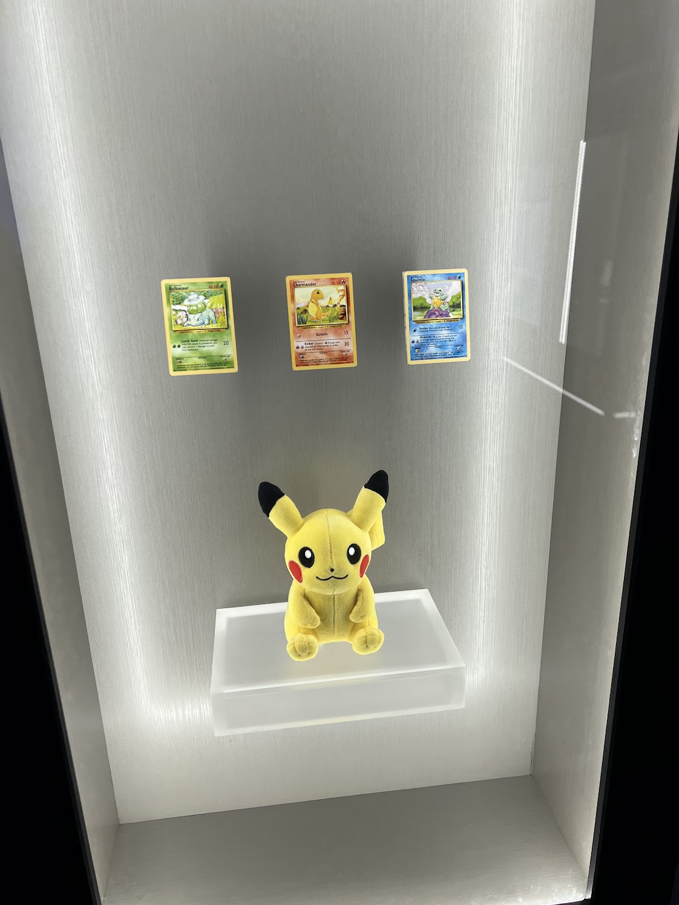

Field Museum · Chicago
Pokémon, fossils, and a return to SUE

Field Museum, Chicago
At the Field Museum, Pokémon offered my children a familiar path into the unfamiliar world of fossils. Characters they already knew became invitations to look more closely, compare forms, and ask how creatures from different times might be understood.
We also returned to SUE. Seeing my children’s excitement on meeting this familiar presence again reminded me that learning is shaped not only by new encounters, but also by revisiting places and objects that have become part of a family’s shared memory.